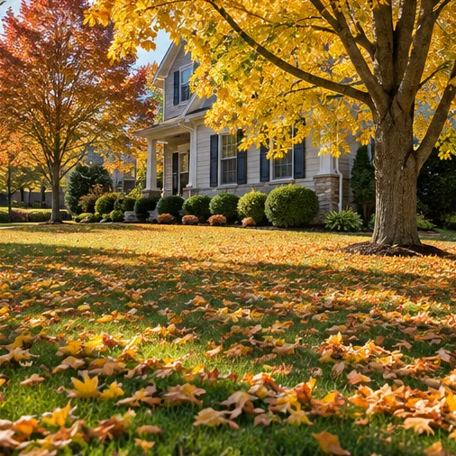
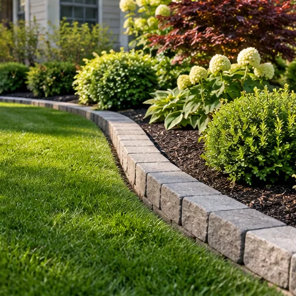

DEMO / NOT CLIENT WORK
DEMO / NOT CLIENT WORKLawn care
A LITTLE INSPIRATION
A peek at landscaping styles and yard-care details we love.
Inspiration gallery only. These six images are AI-generated design concepts, not projects completed by this business. No customer work is claimed.
DEMO / NOT CLIENT WORK DEMO / NOT CLIENT WORK
DEMO / NOT CLIENT WORK DEMO / NOT CLIENT WORK
DEMO / NOT CLIENT WORK DEMO / NOT CLIENT WORK
DEMO / NOT CLIENT WORK
DEMO / NOT CLIENT WORK
DEMO / NOT CLIENT WORKYOUR YARD COULD BE NEXT
Let's talk about ideas that make sense for your property.
Request an estimate ↗